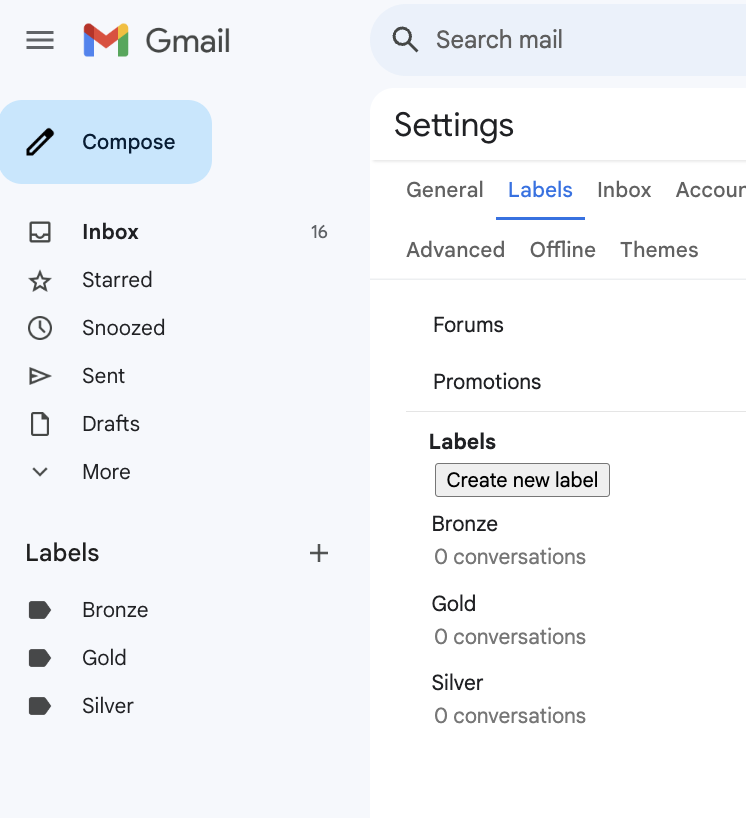
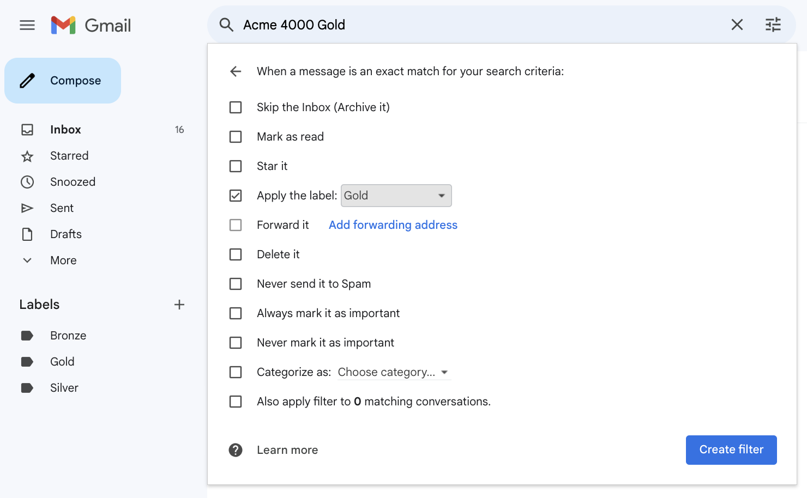
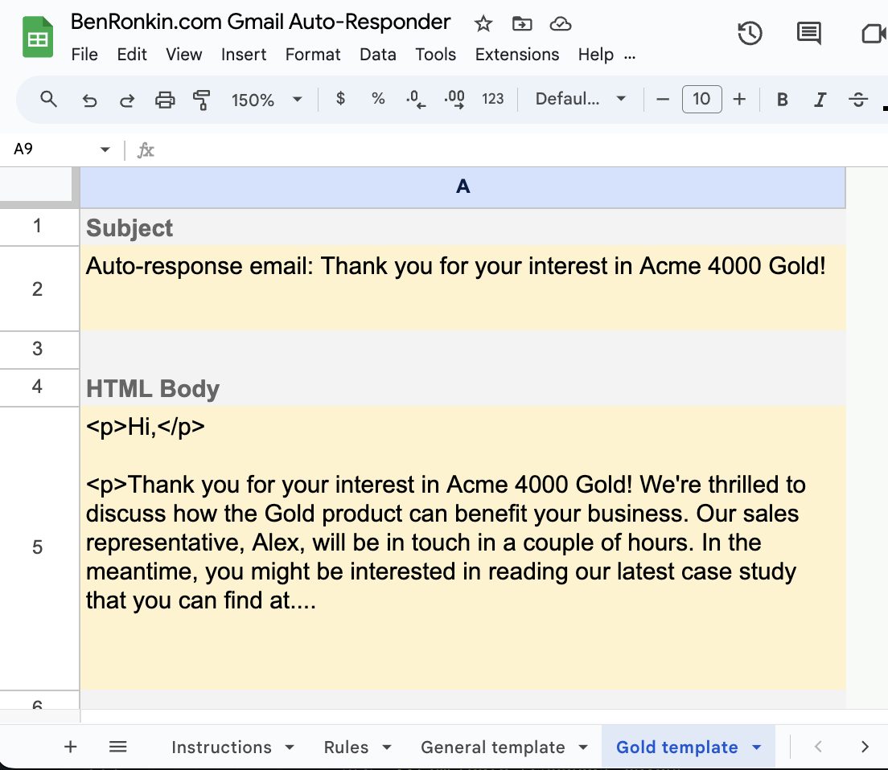
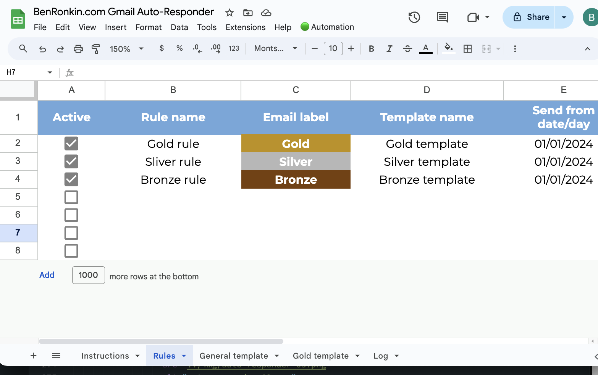

In the dynamic world of sales, effective communication is paramount. Sales professionals are tasked with building relationships, nurturing leads, and closing deals—all while managing a constant influx of emails.
However, the manual nature of email communication can often lead to inefficiencies, missed opportunities, and overwhelmed sales teams. And one-size-fits-all auto-responders fail to deliver personalized and targeted communication that helps customers feel appreciated.
One-size-fits-all auto responses don't cut it anymore
Enter Targeted Auto-Responder for Gmail — an innovative Gmail auto reply system that revolutionizes the way sales representatives interact with their clients and prospects. This comprehensive guide explores the intricacies of automated responses, the ways in which the new solution addresses sales challenges, and the benefits gained that can help transform your own sales process.
Understanding the challenges of sales communication
Today's customers expect quick and personalized communication from the organizations and businesses. Inside and field sales personnel faces several challenges to meet these expectations:
- Time constraints: The Sales team is often inundated with emails from leads, clients, and colleagues, making it challenging to prioritize and respond to each inquiry in a timely manner.
- Manual follow-ups: Following up with leads and clients manually can be a time-consuming and labor-intensive process, leading to delays and missed opportunities.
- Appointment scheduling complexity: Coordinating schedules and arranging appointments via email can be a logistical nightmare, especially when dealing with multiple time zones and availability constraints.
- Repetitive FAQs: Responding to frequently asked questions (FAQs) eats into sales professionals' valuable time, detracting from more strategic tasks such as lead generation and deal closing.

No rest for the weary sales pro
Targeted automation to the rescue
The Targeted Auto-Responder for Gmail is a game-changer for sales reps. It offers a comprehensive solution to the challenges outlined above, providing sales professionals with the tool they need to streamline their communication process and maximize productivity. Let's explore some of the key features that set this auto-responder script system apart:
- Product-specific responses: The sales team can use the Gmail filtering and labeling system to mark inbound sales inquiries based on specific criteria, such as product names included in the subject or body. The team then crafts response templates for each product and maps them to the corresponding rules.
- Day-of-week responses: The sales team availability might fluctuate over the week. With the Targeted Auto-Responder for Gmail, the team can assign different response messages to different days of the week.
- Rep-specific responses: In many businesses, several sales reps may share one Gmail account and may respond to the emails that mention their names. The system enables reps to label incoming emails based on the rep's name and have the system auto-respond whenever the rep is out of office.
- Time-based responses: With this system, the sales team can set up automated responses for different times during the week, such as evenings and weekends.
Sales demo
Let's see how to set up the Targeted Auto-Responder for Gmail with product-based auto responses. Let's assume that our products come in three flavors: Gold, Silver, and Bronze.
The first thing we do is create Gmail labels for these products:
Create Gmail labels
Next, we need to create Gmail filter to label emails containing our product flavors:
Create Gmail filter that assign the right label based on text in the email
Now, inside the Targeted Auto-Responder for Gmail, we can create a product-specific response:
Craft a specific auto response for each product
Finally, we build three auto-response rules that map email labels to templates:
Map labels to response templates
And that's it! Now, any email containing a product name will be labeled as such, and the system will send out a personalized auto-response that matches the sender's interest.
Benefits gained from targeted auto-response
The ability to use gmail and run a script when an email is received offers several advantages for the sales team:
- Increased efficiency: By automating repetitive tasks such as follow-ups and FAQ responses, Gmail Auto Reply frees up valuable time that sales professionals can allocate to more strategic activities, such as lead generation and deal closing. This increased efficiency leads to higher productivity and greater effectiveness in sales communication.
- Improved client satisfaction: Prompt and personalized responses are key to fostering positive client relationships. With Gmail Auto Reply, sales professionals can ensure that clients receive timely and relevant communication, leading to increased satisfaction, trust, and loyalty.
- Streamlined workflow: By using auto-reply inside gmail to send specific emails, the sales can streamline its communication process, reducing administrative overhead and minimizing the risk of communication errors. By automating tasks such as appointment scheduling and response management, sales professionals can focus their energy on activities that drive business growth.
- Scalability: As sales teams grow and client volumes increase, Gmail Auto Reply scales effortlessly to accommodate evolving needs. Whether you're a solo entrepreneur or a large sales organization, Gmail Auto Reply adapts to your requirements, ensuring consistent and reliable communication at any scale.

Conclusion
In conclusion, the Targeted Auto-Responder for Gmail is a powerful tool that empowers sales professionals to streamline their communication process, maximize productivity, and deliver exceptional customer experiences. By crafting highly specific auto response emails based on business logic, sales professionals can improve how prospects perceive the business, as well as strengthen relationship with existing customers. Using the tool, sales rep can tailor messages based on specific dates, days of the week, hours, and email content to ensure that the right message lands every time.